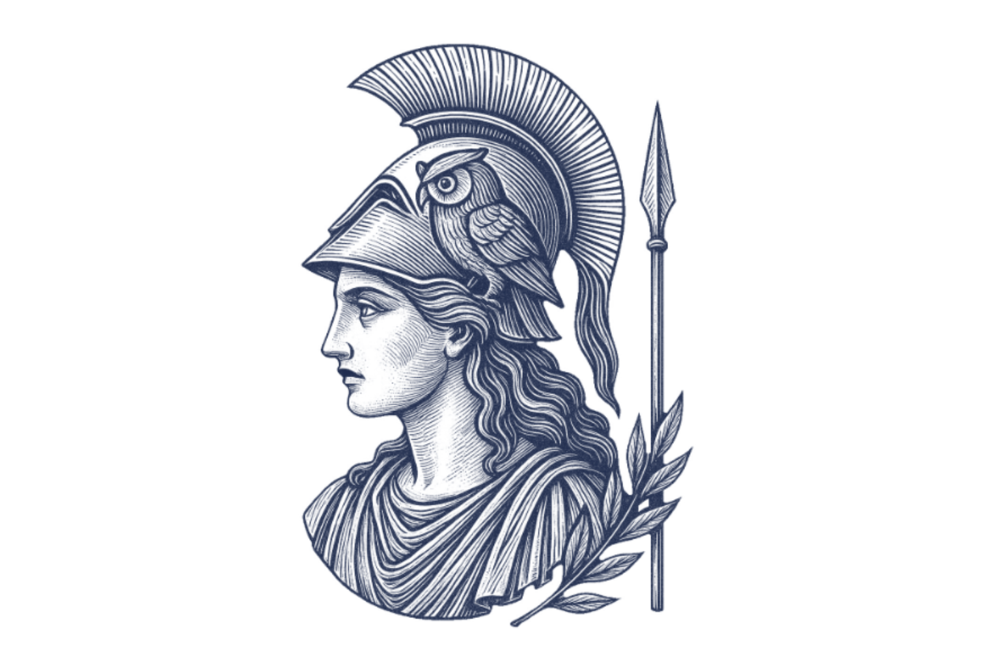

Bem-vindo ao Minerva!
O seu assistente de estudos inteligente, pronto para turbinar seu aprendizado e levar suas habilidades a um novo nível 🚀
Sobre Nós
Minerva é a sua plataforma de estudos inteligente, criada para transformar a forma como você aprende. Com ferramentas dinâmicas, acessíveis e divertidas, você vai conquistar seus objetivos acadêmicos com muito mais facilidade. Com a nossa plataforma, estudar deixa de ser cansativo e vira uma experiência estratégica, inteligente e motivadora!
Minerva
Afinal, o que é Minerva?
Minerva era a deusa romana da sabedoria, das artes, do comércio e da justiça, além da estratégia de guerra. Comumente representada com uma coruja, lança e escudo, Minerva era venerada por sua capacidade de trazer inspiração e conhecimento, sendo considerada uma deusa virgem e associada a uma natureza mais pacífica e civilizada.
Mas e para você?
Para você, Minerva é a sua plataforma de estudos, um assistente inteligente e capaz de te levar a novos céus. Com nossas ferramentas você pode otimizar os seus estudos ao máximo, adquirindo e testando seu conhecimento de forma prática, rápida e eficiente, assim como Minerva, a deusa romana, faria.
Aqui você pode:
- Montar planos de estudo personalizados que se adaptam à sua rotina, através dos templates disponíveis.
- Acessar recursos interativos que tornam o aprendizado mais leve e eficiente.
- Usar flashcards personalizados para memorizar conteúdos de forma rápida.
- Organizar seu tempo com a técnica do Pomodoro.
- Manter o foco com um checklist de tarefas.
Pronto para começar? Explore nossas ferramentas e descubra como o Minerva pode transformar seus estudos!